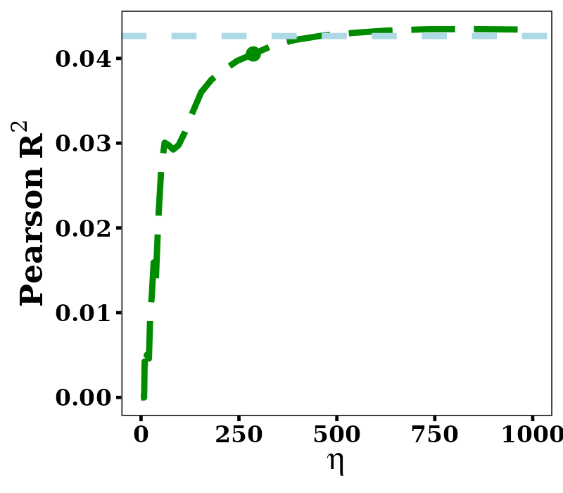
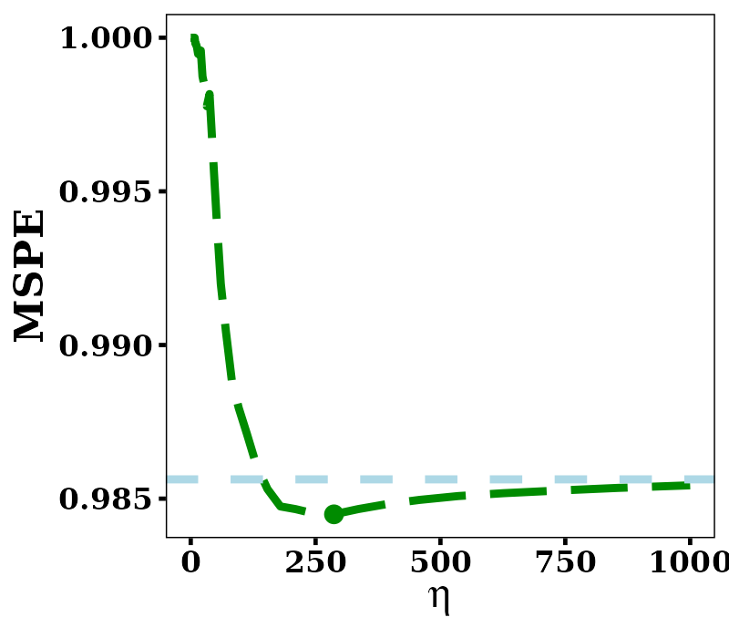
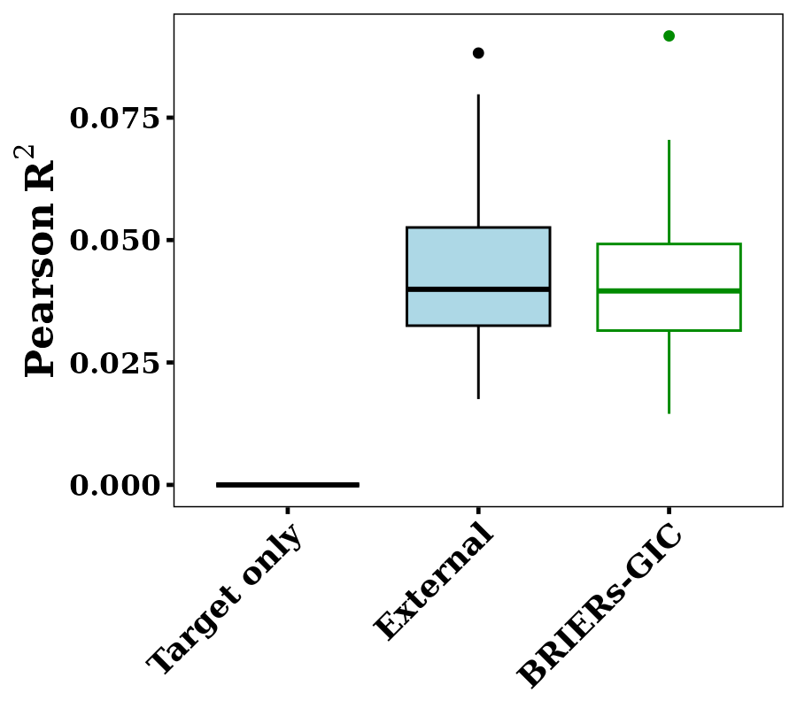
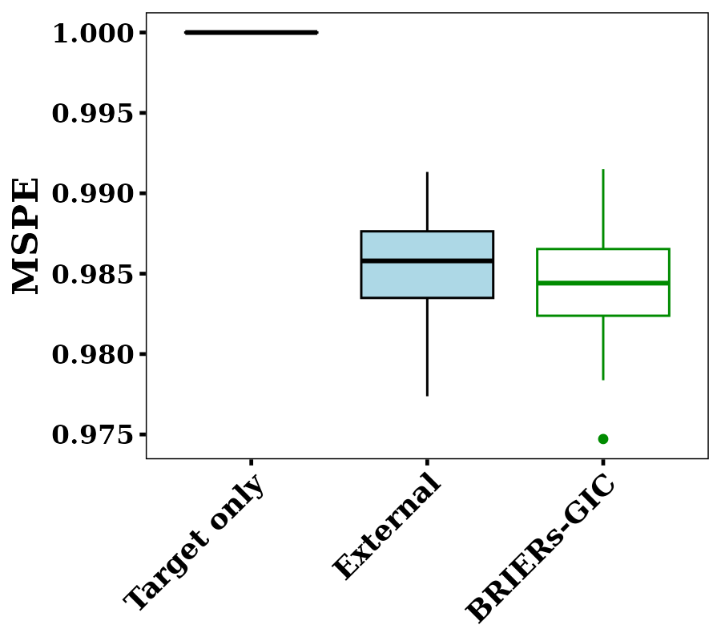
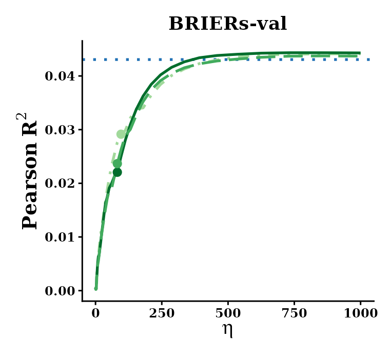
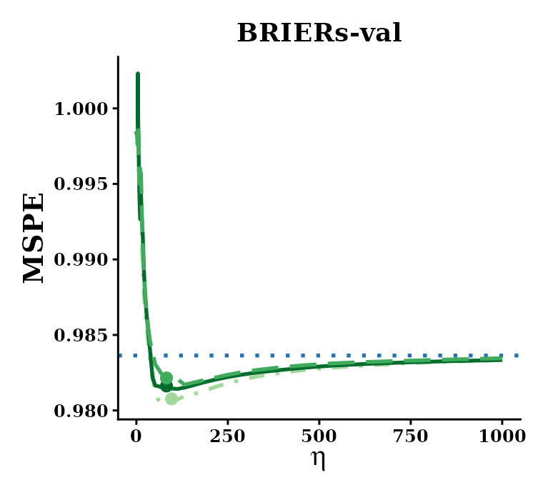
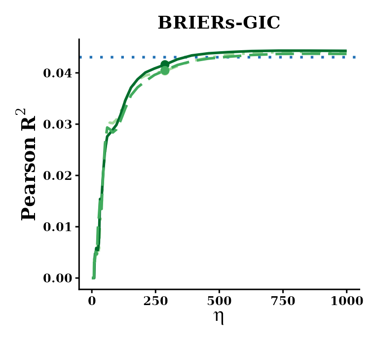
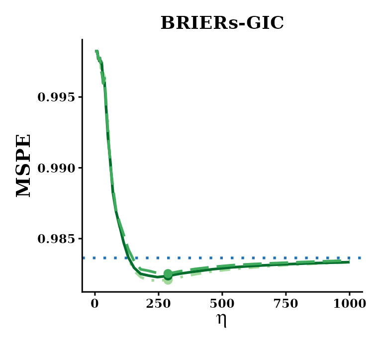
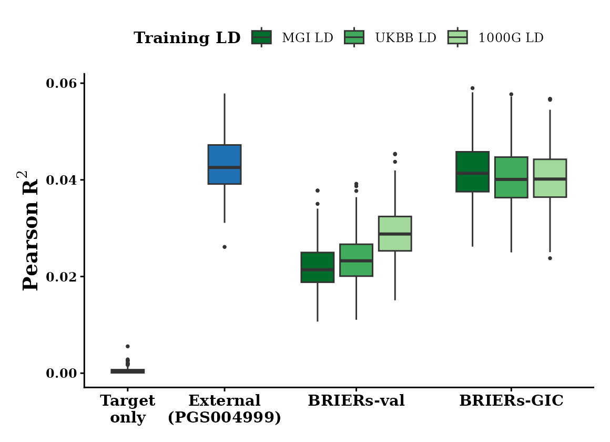
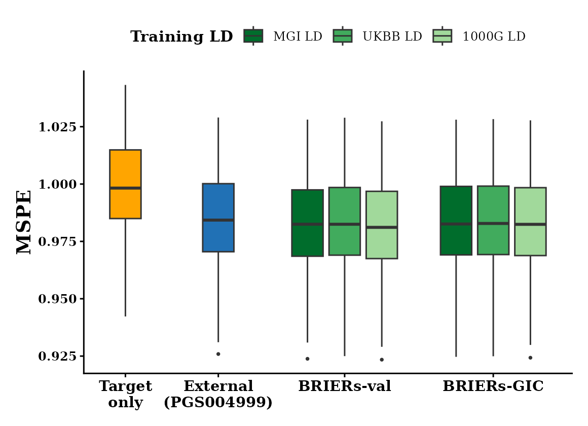

Real Data Example: Cross-ancestry Height Polygenic Risk Modeling from Summary Statistics
Example_panAFR.Rmd1. Introduction
Polygenic risk scores (PRS) are far less accurate in African-ancestry
(AFR) individuals than in European-ancestry individuals, mostly because
AFR genome-wide association studies (GWAS) are small. This example
builds a height PRS for AFR individuals with BRIERs(),
using only public data:
- Target: the Pan-UKB height GWAS of AFR participants (N = 6,556), as summary statistics.
- External model: the PGS Catalog height score PGS004999 (Gunn et al., HGG Advances 2024), a pretrained PRS whose development samples include no UK Biobank AFR participants.
- LD: the public UKBB AFR LD reference panel of PRS-CSx.
- Tuning: the generalized information criterion (GIC), which needs no individual-level data.
The analysis uses 149,090 HapMap3 SNPs. Every input, script and
result is in the Zenodo deposit (DOI: to be added), folder
panAFR_example/:
| Folder | Content |
|---|---|
data/ |
fit-ready inputs: aligned GWAS, LD matrix, external model, SNP list |
scripts/ |
01_download.sh, 02_preprocess.R,
03_fit.R, 04_eval.R
|
results/ |
the fitted BRIER object and the selected model’s
coefficients |
figures/ |
eta lines, boxplots and a summary on the MGI test set (section 5) |
The code below is abridged from those scripts. Run every script from
the panAFR_example/ folder. Steps 2 and 3 can be skipped,
since data/ already holds their output.
2. Downloading the public inputs
scripts/01_download.sh downloads three things into
raw/: the Pan-UKB height summary statistics and phenotype
manifest, the PRS-CSx UKBB AFR LD reference panel, and the harmonized
PGS004999 scoring file.
3. Preparing fit-ready data
scripts/02_preprocess.R aligns every input to the SNP
list data/snp_list.txt, with the ALT allele as the effect
allele throughout.
Target summary statistics. The Pan-UKB AFR effect
sizes are matched to the SNP list by chromosome, position and allele
pair, and turned into marginal SNP-trait correlations with
p2cor():
library(dplyr)
library(Matrix)
library(BRIER)
snp_list = data.table::fread("data/snp_list.txt", data.table = FALSE)
GWAS_raw = data.table::fread(
cmd = "zcat raw/continuous-50-both_sexes-irnt.tsv.bgz",
select = c("chr", "pos", "ref", "alt", "beta_AFR", "neglog10_pval_AFR"),
data.table = FALSE
) %>%
dplyr::filter(chr %in% as.character(1:22)) %>%
dplyr::mutate(chr = as.integer(chr))
GWAS = snp_list %>%
dplyr::inner_join(GWAS_raw, by = c("CHR" = "chr", "BP_hg19" = "pos")) %>%
dplyr::filter((alt == ALT & ref == REF) | (alt == REF & ref == ALT)) %>%
dplyr::mutate(
BETA = ifelse(alt == ALT, beta_AFR, -beta_AFR),
P = 10^(-neglog10_pval_AFR),
N = 6556
) %>%
dplyr::mutate(corr = p2cor(P, N, sign = ifelse(BETA > 0, 1, -1)))LD. convertLDref() reads the PRS-CSx
panel one chromosome at a time, keeps the SNPs of your list, and aligns
the LD signs to your ALT allele. The chromosomes are then stacked into
one block-diagonal matrix:
LD_list = lapply(1:22, function(chr){
ld = convertLDref(
dir = "raw/ldblk_ukbb_afr",
SNP.info = snp_list %>% dplyr::filter(CHR == chr) %>% dplyr::select(SNP, CHR, REF, ALT),
format = "prscs"
)
return(ld$XtX)
})
LD = as(as(Matrix::bdiag(LD_list), "generalMatrix"), "CsparseMatrix")External model. The PGS004999 weights are matched by
chromosome, GRCh38 position and allele pair; a swapped pair negates the
weight. Because BRIERs() works on standardized genotypes,
the per-allele weights are converted to the per-SD scale with the 1000
Genomes AFR allele frequency \(p\),
\(\beta_{SD} = \beta \sqrt{2p(1-p)}\).
The weights are not otherwise rescaled.
4. Fitting BRIERs and selecting by GIC
scripts/03_fit.R fits BRIERs() over 61
values of \(\eta\) from 0 to 1000, then
selects \((\eta, \lambda)\) by GIC with
the GWAS sample size and the GWAS SNP heritability (\(h^2 = 0.41\), Pan-UKB):
GWAS = data.table::fread("data/GWAS_AFR.txt", data.table = FALSE)
LD = readRDS("data/LD_UKBB_AFR.rds")
external = data.table::fread("data/external_PGS004999.txt", data.table = FALSE)
eta_vec = c(0, exp(seq(log(0.1), log(1000), length.out = 60)))
model = BRIERs(
sumstats = GWAS %>% dplyr::select(CHR, BP, REF, ALT, corr),
XtX = LD,
family = "gaussian",
eta.list = list(eta_vec),
beta.external = matrix(external$BETA, ncol = 1),
penalty = "LASSO",
lambda.min = 1e-3,
eps = 1e-4,
ncores = 8,
parallel = TRUE
)
model = BRIERs.selection(model, criteria = "GIC", TN = 6556, h2 = 0.4148)
# Best eta: 286.832
# Best lambda: 3.84e-06The fit takes about 15 minutes on 8 cores. GIC selects \(\eta = 286.8\), a model with 136,950
nonzero SNP weights. The selected coefficients are obtained with
coef(), and results/coef_BRIERs_GIC.txt stores
them as CHR, BP, REF, ALT, COEF (per SD of the ALT dosage):
5. Evaluation on an independent test cohort
The model is evaluated on the Michigan Genomics Initiative (MGI) AFR
cohort, a test set of 1,081 participants that played no part in fitting
or tuning. Height is adjusted for age and sex. The MGI genotypes and
phenotypes are controlled access and are not part of the deposit.
scripts/04_eval.R shows the evaluation: set the three files
at its top to evaluate on your own cohort.
plot.eta() evaluates the model at every \(\eta\), each at its own GIC-best \(\lambda\), and plot.box()
compares the target-only model (\(\eta =
0\)), the external model alone and the selected
BRIER model. Both regress out the covariates and
standardize within each bootstrap subsample:
out_eta = plot.eta(
model,
X = X_testing, # ALT dosages of the 149,090 SNPs
covar.data = covar_data, # columns trait, Gender_cat, Age
criteria = "gaussian.rsq",
pheno.name = "trait",
adjust.covar = c("Gender_cat", "Age"),
standardize.data = TRUE,
bootstrap = TRUE,
bootstrap.n = 100,
seed = 20260912
)
out_box = plot.box(
model,
X = X_testing,
covar.data = covar_data,
criteria = "gaussian.rsq",
pheno.name = "trait",
adjust.covar = c("Gender_cat", "Age"),
standardize.data = TRUE,
bootstrap.n = 100,
seed = 20260912
)Results. Test performance of the model fitted above, with the UKBB AFR LD and tuned by GIC. The spread is over 100 bootstrap subsamples (80%) of the MGI test set.
Test performance along \(\eta\). Test Pearson \(R^2\) (left) and MSPE (right) of the model at each \(\eta\), each at its own GIC-best \(\lambda\). The dashed light blue line is the external PGS004999 alone, and the point marks the GIC-selected \(\eta = 286.8\).


Test performance of the selected models. The
target-only model (\(\eta = 0\)), the
external alone, and BRIERs tuned by GIC.


| Model | Test \(R^2\) | Test MSPE | \(R^2\), bootstrap mean (SD) |
|---|---|---|---|
| Target only (\(\eta = 0\), GIC) | 0.000 | 1.000 | 0.000 (0.000) |
| External PGS004999 alone | 0.043 | 0.985 | 0.043 (0.014) |
BRIERs, UKBB LD, GIC |
0.040 | 0.984 | 0.041 (0.014) |
How to read these results:
- The AFR GWAS alone carries almost no signal. At \(\eta = 0\), GIC chooses the empty model (test \(R^2\) = 0.000). With N = 6,556, the target data cannot support a polygenic score on their own.
- Integration recovers nearly all of the external model’s accuracy without any individual-level data. \(R^2\) rises steeply with \(\eta\) and levels off at the external model’s. The GIC-selected model reaches a test \(R^2\) of 0.040, close to the external alone at 0.043, with a slightly lower MSPE (0.9843 against 0.9854).
6. Using the fitted model
results/BRIERs_GIC.rds is the fitted BRIER
object after GIC selection. To keep it small, each \(\eta\) keeps only its GIC-best \(\lambda\), which is all that
coef() and predict() need:
7. Sensitivity analysis
Because of data privacy, we cannot share the individual-level genotypes of MGI or the LD matrix computed from them, so the data for this analysis are not part of the deposit. We show its results from the method paper, which fits the same model in two more ways:
- Training LD: in-sample LD from MGI AFR training genotypes, and the two public panels, UKBB AFR and 1000 Genomes AFR.
- Tuning: on an MGI AFR validation set (BRIERs-val), or by GIC (BRIERs-GIC), which needs no individual-level data.
Test performance is summarized over 200 random subsamples (80%) of the MGI test set.
Test performance along \(\eta\). For each tuning method, test Pearson \(R^2\) (left) and MSPE (right) as functions of \(\eta\), one line per training LD. The dotted blue line is the external PGS004999 alone, and the points mark each method’s selected \(\eta\).




Test performance of the selected models. Target
only, the external alone, and BRIERs tuned on validation
and by GIC, one box per training LD.


Test \(R^2\) and MSPE on the full MGI test set (target only: 0.0002 and 0.9993; external PGS004999 alone: 0.043 and 0.9844):
| Training LD | BRIERs-val \(R^2\) | BRIERs-val MSPE | BRIERs-GIC \(R^2\) | BRIERs-GIC MSPE |
|---|---|---|---|---|
| In-sample (MGI) | 0.022 | 0.9825 | 0.041 | 0.9832 |
| UKBB | 0.023 | 0.9830 | 0.040 | 0.9833 |
| 1000 Genomes | 0.029 | 0.9816 | 0.040 | 0.9829 |
What the sensitivity analysis shows:
- Public LD panels work about as well as in-sample LD. Under GIC, the three LD matrices give nearly the same test \(R^2\) (0.040 to 0.041) and MSPE (0.9829 to 0.9833), so a summary-statistic analysis does not need the target cohort’s own genotypes.
- GIC selects the tuning parameters well without an independent validation set. With every LD matrix, GIC reaches a higher test \(R^2\) than tuning on the MGI validation set (0.040 to 0.041 against 0.022 to 0.029), with an MSPE within 0.002 of it.
- \(R^2\) and MSPE can rank models differently. Validation-tuned models have the lowest MSPE but a lower \(R^2\).